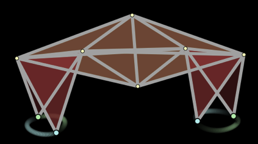

Mathematical methods can be used to simulate mechanical or physical processes.
The walking robot in the simulation on the right is built from small mass particles that are joined by stiff springs. The lengths of the springs used for the legs is altered periodically. This creates a walking movement.
For each frame the simulation uses the positions and velocities of all points to calculate the forces acting on the masses. The forces in turn are used to calculate the positions and velocities for the next frame.
Thus a fluent movement emerges.
|
 |
Movement of the legs